Amrita – Multi Site Grant Management
System
Overview:-
Ministry of Human Resource has elaborate fund allocation to cover a variety of projects located in various places. Our grant management software has been designed to meet the unique needs within higher education and research institutes, including the specific needs of individual departments, centers, schools, colleges, and universities. The grant management software design is scalable, modular, powerful, affordable, and easy to use. The grant management system has tracking reports which present information in formats designed to meet the needs of a wide range of users
The Grant Management System module tracks information such as:
Key Features:-
The key features of this module
are:-
The Projects Tool mainly used to create new projects and subprojects under the System We can view the list of Projects under the Grant Management System.
The Institution Management Tool is used to create institutions and for adding participants for that institution. We can also view the list of Institutions under the project..
Grant Agency Tool will list the list of agencies that provide the Grant for various projects. We can create a new agency also.
Account Head Tool is used for performing the financial transactions of the project. We can create Accounts head and Sub Account Heads.
Grant Period Tool is used for tracking the period allotted for a each grant and the transaction occurred during that particular grant period.
Fund Allocation Tool will provide the details of the fund allocated for the projects including the details such as Project Code, Project Investigator’s Name, Project Start date, Project End date, Grant Agency Name, Amount Allocated etc.
Project Management The Project Management System will give a detailed description of the institutions under project, Projects and Sub projects allocated, Allocate Projects to Head details, Grant Received Details etc
Expense Entry Tool gives the details of the expenses occurred for various heads.
User Management Tool is used for creating a user for the application. And we can map the created user to any projects available in the application.
Report Generation Tool generates
various reports such as Head Wise Expenditure, Institution wise Consolidated Expenditure, Fund Utilization, Grant Summary Report, Grant Agency Report, Project Associate
Reports etc.
Functionality:-
1.
Administration
User name: admin
Password: a
The basic
setting up of Grant management System is done by the administration. Admin has
the privilege to create Projects, sub projects, Institution, Participants and
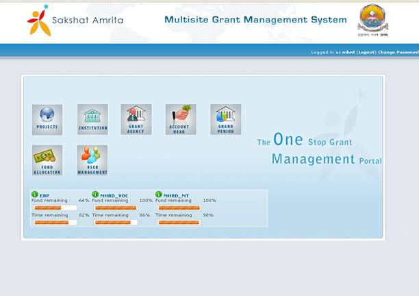:
Projects
All the existing projects details will be listed in the Project List. We can create a new project by clicking New Projects button. We can also create subprojects under one project by clicking the Sub Projects button. We can also close the projects by clicking the Project Closure link
Institution
Management
All the existing Institutions under the projects will be listed in the Institution List. We can create a new institution by clicking the New Institution button in the same screen. Participants can be added for institutions by clicking Participants link in the institution list.
All the existing
Account Head
All the existing Account Heads created will be listed in the Account Head List. We can create a new Account Head by clicking the New Account Head button in the same screen. Sub Account Head can be added for each Account Head by clicking Add Sub Account Head link in the Account Head list.
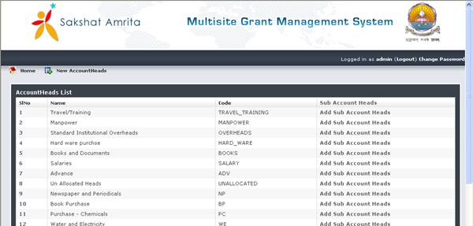
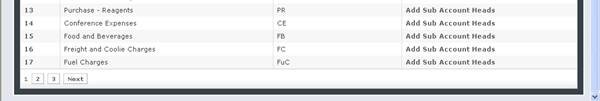
Grant Period
Grant Period is used for tracking the period allotted for a each grant and the transaction occurred during that particular grant period. We can define the period by clicking the New Grant Period button in the same screen.
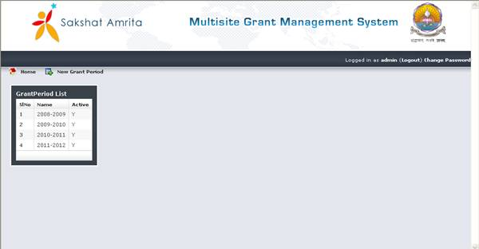
Fund Allocation
All the Fund Allocation details can be entered in the Fund Allocation Page. And the allocated details can be shown in the same page.
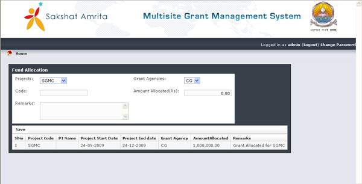
User
Management
The admin can create a new user for the application can map the created user to any projects available in the application by clicking Project User Map. The users will list on the screen.
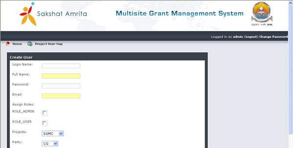
2.
Funds Management
Role: cg(
User name: cg
Password: a
All the details of the project such as the Project Name, Fund Allocation details of the project, Fund Utilized, Balance Fund, Project Duration details will be available by clicking the SGMC on the main screen.
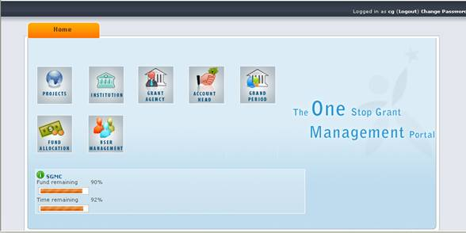
After clicking SGMC01 on the main screen, the
following details will be displayed..
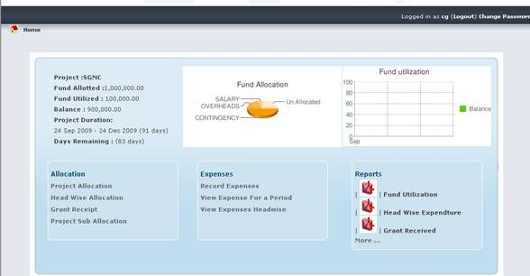
Project
Allocation
The fund allotted for the existing project will be listed here. We can allot funds for new projects by clicking the link Allot Project.
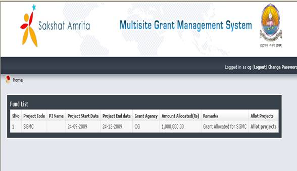
Head
Wise Allocation
All the account head created and the funds allocated for each account head will be displayed here. We can also create new Account Head here.
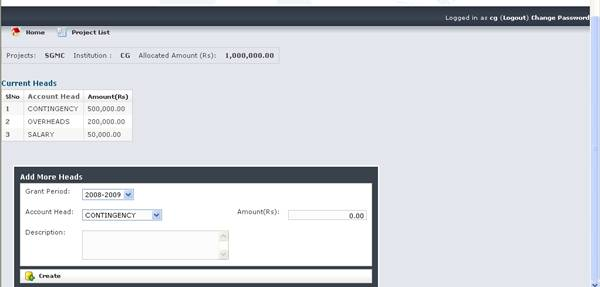
Grant
Received
The grant received for the project will be displayed here. Also we can receive the Grant also using this screen.
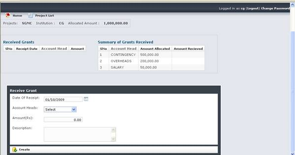
Expense Management
Record Expense
We can add new expenses entries
such as Date of Expense, Account Head, Expense Amount etc. for the projects in
the Expense Entry Screen. We can also get the list of expenses occurred during
a particular period in the same screen Period
Wise Expenses and Account Head Wise Expense Summary details
also be displayed here while selecting the
Record Expense link in the main page.
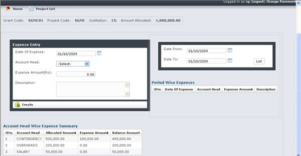
View Expense
for a Period
The expenses occurred for a particular period can be viewed here. The current expense details will also be displayed here.
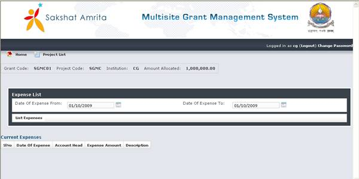
View Expenses Headwise
The Headwise expenses occurred will be displayed here.
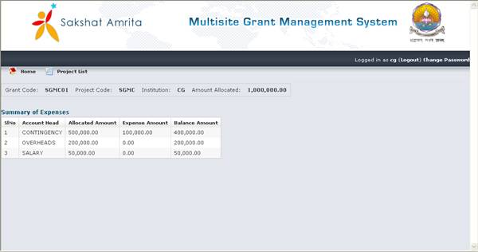
Report Generation
Various forms of reports can be generated by clicking on the icon Reports in the main page.
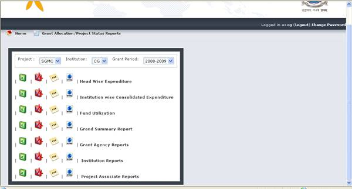